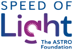

Speed of Light Foundation · theme for reviewThe Speed of Light theme uses the two colors in the Foundation's logo: ASTRO blue does the structural work, and raspberry is the accent. Donate is the one solid raspberry button, so it stands out on every page. Body and headings use Nunito, with body text at 18px for easier reading.
Everything else in the dev's palette carries over as written.
The brand-blue rule sits under the header. Donate is the only solid raspberry button, so it is the first thing the eye lands on.
$15.8 million awarded to more than 150 research teams, and more than $90 million in follow-on funding.
Innovation Awards and ACS–ASTRO clinician scientist development grants support investigators at every stage of their careers.
Hover states are live. Press Tab to move through the controls.
Primary is solid brand blue. Secondary is a brand-blue outline that fills on hover. Donate is the one raspberry button.
Meet the 2026 Speed of Light and ARRO Publication Award winners or browse resources for patients.
Key findings are highlighted like this.
ACS–ASTRO Clinician Scientist Development Grant for radiation oncologists pursuing cancer research.
Stay connected to the latest news, events and stories of impact.
Shown as a static example. Press Tab to see it live. Keep at least a 2px white gap between the ring and blue buttons.
Investing in practicing radiation oncologists who want to conduct cancer research and care for patients.
Applications Due December 1, 2026
// System monospace stack
font-family: ui-monospace,
SFMono-Regular, Menlo,
Consolas, monospace;
Inline code such as --color-brand uses the same stack.
Token names match the CSS block at the bottom of the page.
Structure, text and every button except Donate.
The Foundation's accent. Use it in small doses, plus the one Donate button.
Red, amber and the visited-link violet also come from ASTRO. Their values aren't listed here yet.
One family carries both headings and body. Body text is 18px with a 1.6 line height, because many of the site's readers are older. Cards and panels use 1.5. Small text never goes below 15px. Heading sizes are illustrative.
Speed of Light – The ASTRO Foundation funds research and education so that patients can receive high-quality, innovative radiation treatments that improve their quality of life.
WCAG 2.1 AA needs 4.5:1 for normal text, 3:1 for large text, and 3:1 for UI parts such as focus rings and control edges. Every text pairing in the final theme passes.
| Pairing | Sample | Ratio | Result |
|---|---|---|---|
| Dark blue headings on white | Heading | 12.14:1 | AAA |
| White on dark blue hero | Hero | 12.14:1 | AAA |
| Brand blue links and outline button on white | Volunteer | 8.78:1 | AAA |
| White on brand blue (primary button) | Apply | 8.78:1 | AAA |
| White on raspberry (Donate) | Donate | 5.88:1 | AA |
| White on dark raspberry (Donate hover) | Donate | 8.23:1 | AAA |
| Body text on white | Body | 7.01:1 | AAA |
| Raspberry eyebrow on white | Eyebrow | 5.88:1 | AA |
| Raspberry on raspberry tint | Eyebrow | 5.05:1 | AA |
| Raspberry on palest accent | Eyebrow | 5.35:1 | AA |
| Raspberry on pale blue | Eyebrow | 4.89:1 | AA |
| Dark blue on pale blue (chips) | Chip | 10.09:1 | AAA |
| Body text on pale blue | Panel | 5.83:1 | AA |
| Body text on raspberry tint | Panel | 6.02:1 | AA |
| Dark blue on light accent fill | Pill | 5.35:1 | AA |
| Dark blue on lighter accent (highlight) | Highlight | 6.96:1 | AA |
| Accent on dark, on dark blue | Eyebrow | 8.26:1 | AAA |
| Brand blue search icon on white | Search | 8.78:1 | AA (UI) |
| Focus ring against white | Ring | 3.32:1 | AA (UI) |
| Focus ring against dark blue hero | Ring | 3.65:1 | AA (UI) |
| Focus ring against raspberry tint | Ring | 2.86:1 | Check by hand |
| Focus ring touching brand blue | Ring | 2.64:1 | Needs offset |
| Light accent fill against white | Fill | 2.27:1 | Needs edge |
| Granite on white (carried over from ASTRO) | Caption | 3.07:1 | Large text only |
Base colors first, then role aliases that components should use. Rename the prefix to fit the theme's conventions.
/* Speed of Light theme · final draft for review · October 8, 2026 */ :root { /* Blues */ --sol-color-brand-dark: #003764; --sol-color-brand: #004B8D; --sol-color-brand-pale: #E5EBEF; /* Raspberry accent */ --sol-color-accent: #BA1F7B; --sol-color-accent-dark: #931961; --sol-color-focus: #E35AAB; --sol-color-accent-fill: #EC8EC6; --sol-color-accent-light: #F2B1D7; --sol-color-accent-on-dark: #F6C8E3; --sol-color-accent-tint: #F8EAF2; --sol-color-accent-palest: #FDF1F8; /* Neutrals, shared with ASTRO */ --sol-color-text: #58595B; --sol-color-text-muted: #979291; --sol-color-border: #E5E6E5; --sol-color-bg-alt: #F4F6F8; --sol-color-cream: #FBF5E5; --sol-color-white: #FFFFFF; /* Roles */ --sol-heading: var(--sol-color-brand-dark); --sol-link: var(--sol-color-brand); --sol-link-hover: var(--sol-color-accent); --sol-eyebrow: var(--sol-color-accent); --sol-eyebrow-on-dark: var(--sol-color-accent-on-dark); --sol-header-rule: var(--sol-color-brand); --sol-button-primary-bg: var(--sol-color-brand); --sol-button-primary-hover-bg: var(--sol-color-brand-dark); --sol-button-secondary-border: var(--sol-color-brand); --sol-button-secondary-text: var(--sol-color-brand); --sol-button-secondary-hover-bg: var(--sol-color-brand); --sol-button-donate-bg: var(--sol-color-accent); --sol-button-donate-hover-bg: var(--sol-color-accent-dark); --sol-search-icon: var(--sol-color-brand); --sol-search-icon-hover: var(--sol-color-brand-dark); --sol-search-bg: transparent; --sol-control-accent-bg: var(--sol-color-accent-fill); --sol-control-accent-hover-bg: var(--sol-color-accent-light); --sol-control-accent-fg: var(--sol-color-brand-dark); --sol-panel-info-bg: var(--sol-color-brand-pale); --sol-panel-accent-bg: var(--sol-color-accent-tint); --sol-hero-fade: var(--sol-color-accent-palest); --sol-focus-ring: 3px solid var(--sol-color-focus); --sol-focus-offset: 2px; /* Type */ --sol-font-sans: 'Nunito', system-ui, -apple-system, 'Segoe UI', sans-serif; --sol-font-mono: ui-monospace, SFMono-Regular, Menlo, Consolas, 'Liberation Mono', monospace; --sol-font-size-body: 1.125rem; /* 18px */ --sol-line-height-body: 1.6; --sol-line-height-tight: 1.5; /* cards, panels, hero intros */ --sol-font-size-lead: 1.25rem; /* 20px, hero intros */ --sol-font-size-small: 0.9375rem; /* 15px, minimum; card descriptions and dates */ --sol-font-size-h3: 1.25rem; /* 20px, also content-card titles */ --sol-font-weight-h3: 400; }